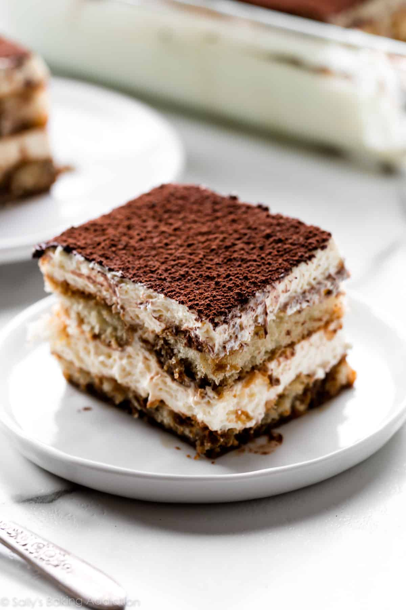

Tiramisu Recipe

Description
This is the recipe I use for tiramisu that is fairly simple and straightforward. It's always a hit with my friends and family!
Ingredients
- 6 large egg yolks
- 1 cup sugar
- 1 1/4 cup mascarpone cheese
- 1 3/4 cup heavy whipping cream
- 30 each Italian ladyfingers (Savoiardi style)
- 1 cup of cold espresso or strong coffee for dipping
- 1/2 cup coffed flavored liqueur (optional)
- 1 ounce unsweetened cocoa for dusting
Steps
- When you are ready to make the sabayon place about one inch of water in a small pot and bring to a boil.
Reduce the heat to simmer and place a bowl on top of the small pot so it's sitting on the pot without touching the water.
- Add the egg yolks and sugar to the bowl, whipping to mix the ingredients together. Place the bowl on the small pot of simmering water.
Using a whisk to mix, whip the egg/sugar mixture constantly for about 10 minutes. This will cook the eggs.
The mixture will increase in volume as it thickens. This is your sabayon. After you have finished whipping the sabayon,
remove the bowl from the heat and continue to whip yolks to help it cool. The mixture should be thick and a lemon yellow color.
Allow to cool briefly before mixing in mascarpone.
- Add room temperature Mascarpone to whipped yolks, mix until well combined. Don't overmix this can cause curdling.
- In a separate bowl, using an electric mixer whip cream to stiff peaks. (hand mixer or stand mixer is fine)
This process should be slow, starting. on low increasing the speed over about ten minutes.
- Gently fold the whipped cream in the mascarpone sabayon mixture and refrigerate until you are ready to assemble the tiramisu.
- Mix the cold espresso (or strong coffee) with the optional coffee liqueur and dip the ladyfingers into the mixture just long enough to get them wet,
do not soak them!
- Arrange the ladyfingers in the bottom of a 9-inch square baking dish (or container similarly sized)
- Repeat process with another layer of ladyfingers.
- Add another layer of tiramisu cream.
- Refrigerate at least 4 hours, overnight is best.
- Dust with cocoa before serving.